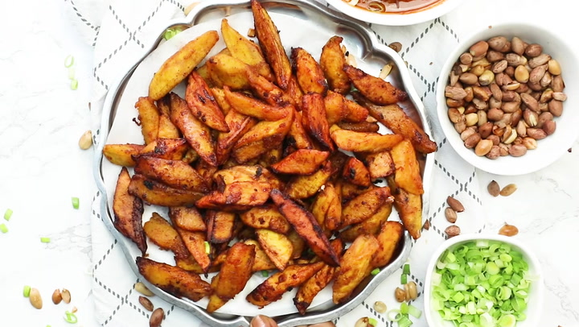

Kelewele (Spicy Fried Plantains) – African spicy fried ripe plantains that is crunchy on the outside and soft on the inside.
This spicy fried snack is one of those street vendor foods that are very easy to make.
This soft, spicy, and sweet snack pairs well with crunchy peanuts or with any protein..

Kelewele served with roasted peanutsUsing a sharp knife cut both ends off the plantain. This will make it easy to grab the skin of the plantains.
Slit a shallow line down the long seam of the plantain,
cut only as deep as the peel. Remove plantain peel by pulling it back.
Cut plantains in diagonal pieces and set aside.
Blend onions , ginger, garlic, in a blend or food processor, with just enough water to facilitate blending,
then add cayenne pepper, lemon, nutmeg, salt and bouillon. Set aside
In a large bowl toss the plantain cubes and ginger spice mixture
Let it rest for about 10 to 20 minutes to absorb the flavor
Heat up a large skillet or cast iron with oil up to ½ inch- medium-high heat until hot but not smoking.
Fry the plantain cubes in batches , turning once, until golden brown, about 5 minutes.
Do not overcrowd the pan (it will cause the plantains to be soggy and absorb excess oil)
Using a slotted spoon, transfer the fried plantains to pan lined with paper towels.
Serve warm.
Calories: 301kcal (15%)| Carbohydrates: 77g (26%)| Protein: 3g (6%)| Fat: 1g (2%)| Sodium: 958mg (42%)| Potassium: 1218mg (35%)|
Fiber: 5g (21%)| Sugar: 36g (40%)| Vitamin A: 2965IU (59%)| Vitamin C: 45.6mg (55%)| Calcium: 7mg (1%)| Iron: 1.4mg (8%)